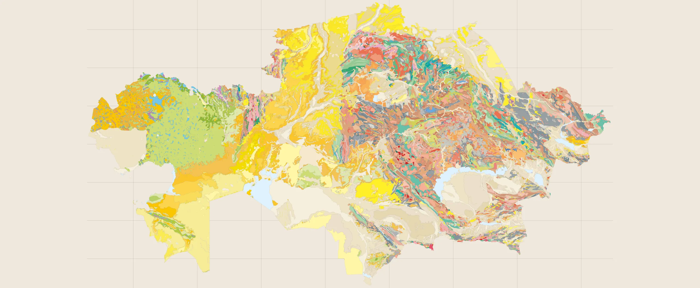
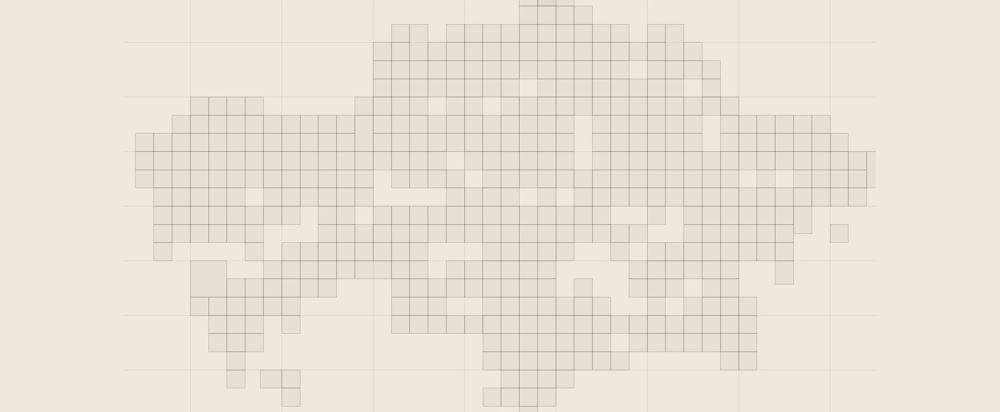

About
kzgeology is a public geological map of Kazakhstan. It brings together published maps and official subsoil data so they can be read in one place, without a login.
- 487Gosgeolkarta geological sheets at 1:200,000
- 1967Geological map of the Kazakh SSR at 1:1,500,000, with its fault and mineral-deposit layers
- Structural, mineral, and geoenvironmental layers
- Official subsoil-use and licence data
How it's made
The maps begin as printed sheets and published figures. Each sheet is georeferenced, then cut into tiles so that only the area in view is loaded. Vector layers are traced from those sources and drawn over the map.

Sources
The layers on this map are drawn from the following published sources.
Regional geological maps
- All-Union Aerogeological Trust, 1967. Geological map of the Kazakh Soviet Socialist Republic and adjacent territories of the union republics. Scale 1:1,500,000. Editor: V. F. Bespalov. geokniga.org/maps/45151
- Daukeev, S. Zh., Uzhkenov, B. S., et al. (eds.). Atlas of the Lithology-Paleogeographical, Structural, Palinspastic and Geoenvironmental Maps of Central Eurasia. ISBN 9965-13-566-5. Used here for main tectonic structures, sedimentary cover structure, historic-geological sections, and the geoenvironmental maps.
1:200,000 sheets
- Gosgeolkarta. Geological map of the USSR, scale 1:200,000. 487 sheets covering Kazakhstan. Scans from Mail.ru and Geokniga.
Mineral deposits and faults
- Detailed faults and mineral deposits, digitized from All-Union Aerogeological Trust, 1967 (cited above).
- Regional faults and ore occurrences: industry compilation.
USGS assessments
- Berger, B. R., Mars, J. L., Denning, P., Phillips, J. D., Hammarstrom, J. M., Zientek, M. L., Dicken, C. L. and Drew, L. J., with contributions from Alexeiev, D., Seltmann, R. and Herrington, R. J., 2014. Porphyry copper assessment of western Central Asia. U.S. Geological Survey Scientific Investigations Report 2010-5090-N. doi:10.3133/sir20105090N
- Box, S. E., Syusyura, B., Hayes, T. S., Taylor, C. D., Zientek, M. L., Hitzman, M., Seltmann, R., Chechetkin, V., Dolgopolova, A., Cossette, P. M. and Wallis, J., 2012. Sandstone copper assessment of the Chu-Sarysu Basin, Central Kazakhstan. U.S. Geological Survey Scientific Investigations Report 2010-5090-E. doi:10.3133/sir20105090E
- Cossette, P. M., Bookstrom, A. A., Hayes, T. S., Robinson, G. R., Wallis, J. and Zientek, M. L., 2014. Sandstone copper assessment of the Teniz Basin, Kazakhstan. U.S. Geological Survey Scientific Investigations Report 2010-5090-R. doi:10.3133/sir20105090R
- Mihalasky, M. J., Ludington, S., Hammarstrom, J. M., Alexeiev, D. V., Frost, T. P., Light, T. D. and Robinson, G. R., et al., 2015. Porphyry copper assessment of the Central Asian Orogenic Belt and eastern Tethysides: China, Mongolia, Russia, Pakistan, Kazakhstan, Tajikistan, and India. U.S. Geological Survey Scientific Investigations Report 2010-5090-X. doi:10.3133/sir20105090X
- Dicken, C. L., Dunlap, P., Parks, H. L., Hammarstrom, J. M. and Zientek, M. L., 2016. Spatial database for a global assessment of undiscovered copper resources. U.S. Geological Survey Scientific Investigations Report 2010-5090-Z. doi:10.3133/sir20105090Z
- Orris, G. J., Cocker, M. D., Dunlap, P., Wynn, J. C., Spanski, G. T., Briggs, D. A., Gass, L., Bliss, J. D., Bolm, K. S., Yang, C., Lipin, B. R., Ludington, S., Miller, R. J. and Slowakiewicz, M., 2014. Potash: a global overview of evaporate-related potash resources, including spatial databases of deposits, occurrences, and permissive tracts. U.S. Geological Survey Scientific Investigations Report 2010-5090-S. doi:10.3133/sir20105090S
- Syusyura, B., Box, S. E. and Wallis, J., 2010. Spatial databases of geological, geophysical, and mineral resource data relevant to sandstone-hosted copper deposits in central Kazakhstan. U.S. Geological Survey Open-File Report 2010-1124. doi:10.3133/ofr20101124
- Baker, M. S., Elias, N., Guzman, E. and Soto-Viruet, Y., 2010. Mineral facilities of Northern and Central Eurasia. U.S. Geological Survey Open-File Report 2010-1255. doi:10.3133/ofr20101255
- Brownfield, M. E., Steinshouer, D. W., Povarennykh, M. Y., Eriomin, I., Shpirt, M., Meitov, Y., Sharova, I., Goriunova, N. and Zyrianova, M., 2001. Coal quality and resources of the Former Soviet Union; an ArcView project. U.S. Geological Survey Open-File Report 2001-104. doi:10.3133/ofr01104
- Schenk, C. J., Mercier, T. J., Le, P. A., Cicero, A. D., Drake, R. M., II, Finn, T. M., Gelman, S. E., Hearon, J. S., Johnson, B. G., Lagesse, J. H., Leathers-Miller, H. M. and Timm, K. K., 2025. Assessment of undiscovered conventional oil and gas resources of the Greater Caspian area, 2022. U.S. Geological Survey Fact Sheet 2024-3047. doi:10.3133/fs20243047. Assessment-unit GIS: doi:10.5066/P13GJMAQ
Active faults, seismicity and geophysics
- King, T., Elliott, A., Grützner, C., Styron, R. and Walker, R., 2024. The Tien Shan Active Fault Database (Version 1.0) [dataset]. Zenodo. doi:10.5281/zenodo.10659677. CC BY 4.0.
- Mohadjer, S., Ehlers, T. A., Bendick, R., Stübner, K. and Strube, T., 2016. A Quaternary fault database for central Asia. Natural Hazards and Earth System Sciences, 16, 529-542. doi:10.5194/nhess-16-529-2016. CC BY 3.0. Fault traces from the paper supplement.
- Styron, R. and Pagani, M., 2020. The GEM Global Active Faults Database (GAF-DB). Earthquake Spectra, 36(S1), 160-177. doi:10.1177/8755293019878195. Data: GEM Global Active Faults. CC BY-SA 4.0. The Active faults layer includes GEM traces and is therefore also offered under CC BY-SA 4.0.
- U.S. Geological Survey, Earthquake Hazards Program. ANSS Comprehensive Earthquake Catalog (ComCat). Events of magnitude 3.0 and greater in the Kazakhstan region, 1 January 1900 to 26 November 2026. Snapshot downloaded 27 November 2026. earthquake.usgs.gov.
- World Bank, 2023. Central Asia seismic return period hazard maps, peak ground acceleration [dataset]. Dataset 0064172. World Bank Data Catalog. CC BY 4.0. The map shows the 475-year return period (10% probability of exceedance in 50 years) from the open catalog files, not the later restricted GEM 2025 model.
- Meyer, B., Chulliat, A. and Saltus, R., 2017. Derivation and error analysis of the Earth Magnetic Anomaly Grid at 2 arc-minute resolution version 3 (EMAG2v3). Geochemistry, Geophysics, Geosystems, 18, 4522-4537. doi:10.1002/2017GC007280. Data: NOAA National Centers for Environmental Information, public domain. Not for navigation.
Research papers
- Windley, B. F., Alexeiev, D., Xiao, W., Kröner, A. and Badarch, G., 2007. Tectonic models for accretion of the Central Asian Orogenic Belt. Journal of the Geological Society, 164, 31-47. doi:10.1144/0016-76492006-022
- Li, P., Sun, M., Rosenbaum, G., Yuan, C., Safonova, I., Cai, K., Jiang, Y. and Zhang, Y., 2018. Geometry, kinematics and tectonic models of the Kazakhstan Orocline, Central Asian Orogenic Belt. Journal of Asian Earth Sciences, 153, 42-56. doi:10.1016/j.jseaes.2017.07.029
- Safonova, I. and Perfilova, A., 2023. Survived and disappeared intra-oceanic arcs of the Paleo-Asian Ocean: evidence from Kazakhstan. National Science Review, 10(2), nwac215. doi:10.1093/nsr/nwac215
- Safonova, I., Savinskiy, I., Perfilova, A., Obut, O., Gurova, A. and Krivonogov, S., 2024. A new tectonic model for the Itmurundy Zone, central Kazakhstan: linking ocean plate stratigraphy, timing of accretion and subduction polarity. Geoscience Frontiers, 15(4), 101814. doi:10.1016/j.gsf.2024.101814
Subsoil use data
- Unified Subsoil Use Platform (licences and subsoil use): minerals.e-qazyna.kz
- PUGFN (oil, gas, uranium), from the same platform: contracts map
- Geological maps listed on nedra.kz/map
Terrain
- Mapzen/Tilezen terrain tiles via AWS Open Data. Elevation data courtesy of the U.S. Geological Survey (SRTM, GMTED2010) and NOAA (ETOPO1).
Contribute
You can add a map to this project, or ask for one to be taken down.
Individuals
If you have the right to share a map, submit it with the Donate maps form. Each submission is reviewed before it is added.
Institutions
Mining companies, geological surveys, and other institutions may contribute maps or datasets. Work that is included will be credited. Use the same form and name the institution in the note.
Copyright
If you hold rights in a map or dataset on this site and believe it should not be shown, please write through the form. It will be removed on request.
Open source
The code that runs this site is public. The map data are hosted separately.
Authors
Many thanks to contributors:
- Dr. Milovan Fustic
- Almaz Nyshanbay
- Dr. Jovid Aminov
- Marat Khakimzhanov
- Dr. Bas den Brok
- Azamat Zhumagali
- Iliyas Mukhtar
- Dr. Mahmoud Leila
- Bekzhan Smagambetov
- Gulsayanurailym Khabiyeva
- and others.